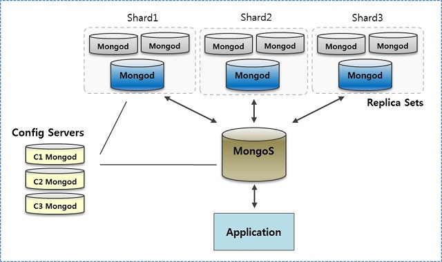

Шардинг.
Шардинг – это процесс хранения документов на нескольких серверах и это способ, которым MongoDB справляется с большими данными. С ростом количества данных, один сервер не может хранить все данных, ни записывать их, ни давать к ним доступ. Шардинг решает проблему путём горизонтального масштабирования. Благодаря данному механизму мы можем подключать дополнительные сервера для хранения, записи и чтения данных.
Преимущества шардинга
• При репликации все записи идут в главный узел.
• Обработка запросов ложится на первичный узел.
• Один набор копий (replica set) имеет ограничение в 12 узлов.
• При работе с большим количеством данных, одна машина не может хранить все данные.
• Вертикальное масштабирование слишком дорогое
Ни рисунке представлена общая схема шардинга в MongoDB:

Элементы схемы:
• Конфигурационный сервер - Сервер, который хранит метаданные кластера. Эти данные содержат информацию о маппинге данных кластера на шарды (shards).
• Шарды (Shards) - Используются для хранения данных. Обеспечивает высокую производительность. В промышленной разработке, каждый шард представляет собой отдельную replica set.